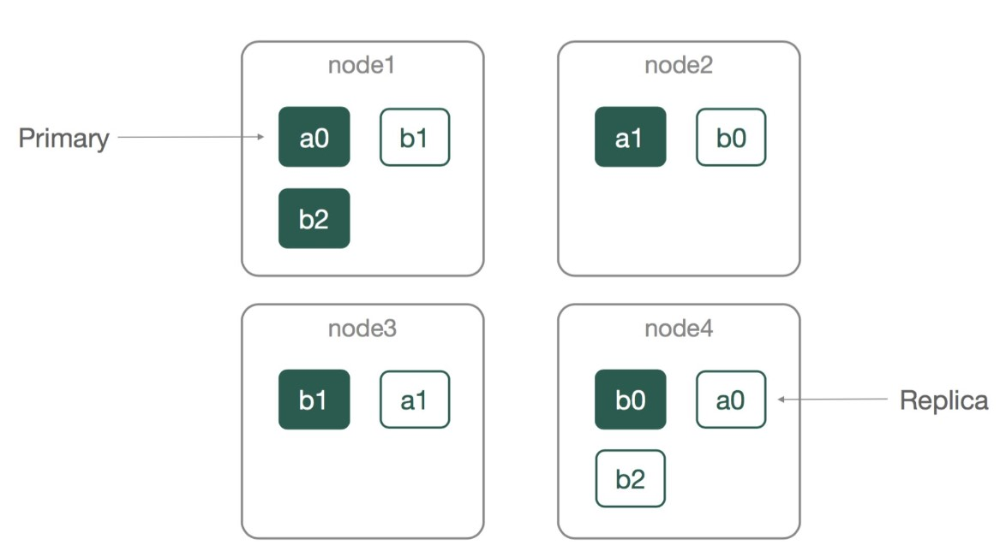
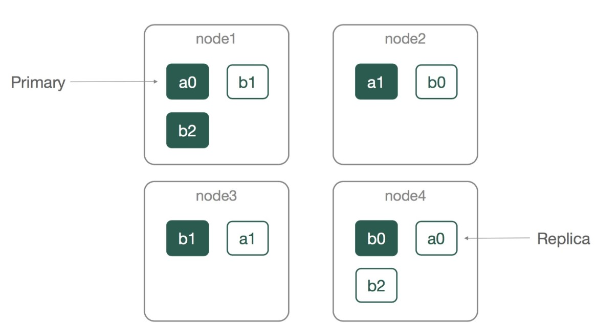
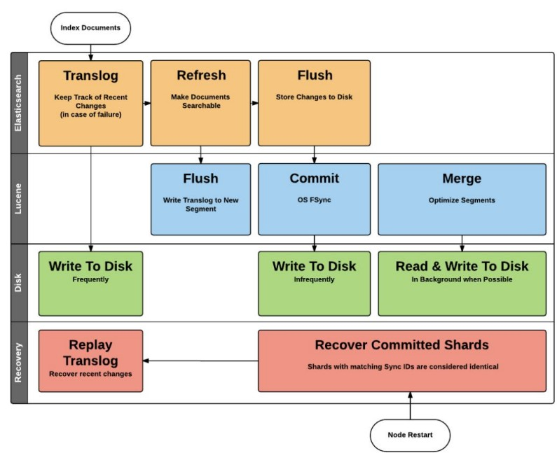

데이터 엔지니어링 스터디 내용정리 - Elasticsearch
개요
- 참여중인 데이터 엔지니어링 스터디에서 배우는 내용 정리
- 데이터 수집, 정제 : pyspark, airflow
- 저장 : elasticsearch
- 시각화 : kibana
3주차 과제리뷰
정제코드 작성해보기
- jobs
- main.py
Spark initialization + filter(정제) + 저장
공통기능
추후 자동화될 부분 고려되어있는 코드
parser = argparse.ArgumentParser() parser.add_argument("--target_date", default=None, help="optional:target date(yyyy-mm-dd)") args = parser.parse_args() # ...(생략) if args.target_date is None: # 정제실패시 다시돌릴 때 편의를 위함 args.target_date = (datetime.now() - timedelta(1)).strftime('%Y-%m-%d') args.input_path = f"/opt/bitnami/spark/data/{args.target_date}-*.json" # 데이터명이 날짜일 예정
- filter.py
- 정제코드(BaseFilter + TopRepoFilter)
from base import BaseFilter # base.py에서 가져옴 class TopRepoFilter(BaseFilter): def filter(self, df): # Top 10 Repo: Push Count repo_cnt_df = df.groupBy('repository_id', 'repo_name').pivot('type').count() repo_cnt_df.where((F.col('repository_id').isNotNull())) \ .orderBy(F.desc('PushEvent')) \ .limit(10) return repo_cnt_df- 정제코드(BaseFilter + DailyStatFilter)
from base import BaseFilter # base.py에서 가져옴 class DailyStatFilter(BaseFilter): def hit_count(self, df, cond, col_name): # is_cond 컬럼을 만든 후, # F.col('type') == 'PushEvent' 와 같은 조건을 F.when(cond, 1)에 넣어 값이 조건에 맞으면(PushEvent) 1, 아니면(otherwise) 0 # .agg(F.sum('is_cond').alias(col_name) 으로 합산 후 alias지정 return df.withColumn('is_cond', F.when(cond, 1).otherwise(0)).agg(F.sum('is_cond').alias(col_name)) def filter(self, df): # daily stats ## 유니크한 유저 : d_user_count | 1000 stat_df = df.agg(F.countDistinct('user_name').alias('d_user_count')) ## d_repo_count | 500 데이터프레임을 만든 후, crossjoin으로 합침 : d_user_count, d_repo_count | 1000, 500 stat_df = stat_df.crossJoin(df.agg(F.countDistinct('repository_id').alias('d_repo_count'))) # push counts ## where절로 숫자를 구한 후 데이터프레임 생성작업이 필요없도록, hit_count함수로 구현 ## push_cnt_df = self.hit_count(df, F.col('type') == 'PushEvent', 'push_count') push_cnt_df = push_cnt_df.cache() # 캐시를 호출하여 최적화에 도움 stat_df = stat_df.crossJoin(push_cnt_df) pr_cnt_df = self.hit_count(df, F.col('type') == 'PullRequestEvent', 'pr_count') pr_cnt_df = pr_cnt_df.cache() # 캐시를 호출하여 최적화에 도움 stat_df = stat_df.crossJoin(pr_cnt_df) fork_cnt_df = self.hit_count(df, F.col('type') == 'ForkEvent', 'fork_count') fork_cnt_df = fork_cnt_df.cache() # 캐시를 호출하여 최적화에 도움 stat_df = stat_df.crossJoin(fork_cnt_df) commit_comment_cnt_df = self.hit_count(df, F.col('type') == 'CommitCommentEvent', 'commit_comment_count') commit_comment_cnt_df = commit_comment_cnt_df.cache() stat_df = stat_df.crossJoin(commit_comment_cnt_df) stat_df.show(10, False) return stat_df - base.py
- executor세팅 관련코드
def read_input(spark, input_path): def _input_exists(input_path): return glob.glob(input_path) if _input_exists(input_path): df = spark.read.json(input_path) df.printSchema() # 파티션의 수가 EXECUTOR보다 적으면 리파티션 (노는 EXECUTOR방지) max_executor_num = 3 if df.rdd.getNumPartitions() < max_executor_num: df = df.repartition(max_executor_num) return df else: return None- 메타정보 추가코드
def df_with_meta(df, datetime): df = df.withColumn("@timestamp", F.lit(datetime)) return df
- main.py
spark-submit
- 참고사항
- memory옵션(driver, executor), num-executors, executor-cores를 만져보기
- gh archive데이터를 기준으로 메모리 3기가 정도가 원활해보임
spark-submit \ --name main.py \ --master spark://spark-master:7077 \ --jars "/opt/bitnami/spark/resources/elasticsearch-spark-30_2.12-8.4.3.jar" \ --conf spark.dynamicAllocation.enabled=true \ --conf spark.dynamicAllocation.executorIdleTimeout=2m \ --conf spark.dynamicAllocation.minExecutors=1 \ --conf spark.dynamicAllocation.maxExecutors=3 \ --conf spark.dynamicAllocation.initialExecutors=1 \ --conf spark.memory.offHeap.enabled=true \ --conf spark.memory.offHeap.size=2G \ --conf spark.shuffle.service.enabled=true \ --conf spark.executor.memory=2G \ --conf spark.driver.memory=2G \ --conf spark.driver.maxResultSize=0 \ --num-executors 2 \ --executor-cores 1 \ ${SCRIPT}
4주차 수업정리
Elasticsearch
- Elasticsearch은 검색엔진인데 왜 저장용도로 사용하는가
- ELK스택 : Elasticsearch + Logstash + Kibana를 같이 사용. 로그데이터 관리/모니터링 등에 많이 사용(스타트업부터~대기업까지도)
- 검색엔진이 아닌 ELK스택과 같은 활용으로 이해
- 키바나와 같이 사용할 수 있는 매력(편리함)
- 데이터의 저장/커넥션/export 등의 과정없이, ES의 호스트네임 입력만으로 쉽게 연동 가능
- 데이터의 저장/커넥션/export 등의 과정없이, ES의 호스트네임 입력만으로 쉽게 연동 가능
- Elasticsearch
- distributed, RESTful search and analytics engine
- RESTful : REST API형태로 호출해서 검색가능(서버에 쿼리를 날리면 검색이 가능)
- Apache Lucene을 기반으로 만든 분산 검색 엔진
- Analyzer가 내장되어있어 document를 저장하게되면, 검색되도록 해줌
- distributed, RESTful search and analytics engine
- Elasticsearch 특징(Characteristics)
- transaction, join 지원되지 않음
- join을 사용해야하는 경우는 ES를 쓰지 않도록 해야 함
- (검색을 위한)색인작업 시간이 필요
- 색인을 위한 Scoring 알고리즘(제일 적합한 문서임을 점수를 매김) : TF-IDF→BM25로 변경됨
- BM25는 대기업 검색엔진에도 들어있음
- 색인을 위한 Scoring 알고리즘(제일 적합한 문서임을 점수를 매김) : TF-IDF→BM25로 변경됨
- 버전업이 빠르고/잦고/많음. 이에 따라 (버전별) UI나 API차이가 클 수 있음
- transaction, join 지원되지 않음
- Elasticsearch 구조 (Structure)
- document : 하나의 기본 구조. json 형태로된 문서
- field : document의 필드 (jon의 필드, dataframe에서의 컬럼과 같음)
- index : document가 모인 단위, 여러 노드에 분산 저장됨(분산 검색엔진이므로)
- RDBMS의 index와는 다른 역할. index를 만들어 빠르게 쿼리를 가능하게 하지 않음
- _id : index내 문서에 부여된 unique id (
ES가 unique함을 보장하지는 않으며사용자의 책임 하에 사용)- 다른 index의 _id라면 같을 수 있음
- 같은 index 내의 문서라고, 다른 shard에 있어 동일 _id 를 가질 가능성 있음
- 강제하고, 체크하고 있지 않기 때문
- 강제하고, 체크하고 있지 않기 때문
- Shard
- Primay와 Replica가 있음. 아래 그림기준 같은 색 칠해진 것들이 같은 Shard 
- Primay와 Replica가 있음. 아래 그림기준 같은 색 칠해진 것들이 같은 Shard 
- Search과정(저장쿼리결과도출까지 ES내부적으로 일어나는 일) 및 용어
- document를 분석해서 Lucene(루신)이 inverted index(역색인)를 생성
- 아파치 루신이 (메모리에서) 역색인을 생성
- document의 insert/update/delete 변경을 메모리에 들고 있다가 주기적으로(batch단위로) disk에 flush
- refresh: 디스크에 내려 검색가능해짐
- disk에 flush(들어간)된 segment들이 중간중간 적절히 segment merge됨
- segment: 디스크에 기록된 파일들의 단위
- (여러 segment가 모인) lucene index
- 루신엔진의 역할은 모인 segment에서 결과를 검색하여 결과를 줌(Lucene은 index 내에서만 검색 가능)
- 루신엔진이 준 결과를 ES가 모아 merge에서 리턴함
- shard(lucene index를 모은[wrapping] 단위)
- eleasticsearch index : 여러 shard 가 모인 단위.
- ES에서 높은 highlevel에서 부르는 index
- ES검색을 하면 각 shard에 명령이 내려가 내부에서 검색한 후, 결과를 merge해서 줌
- commit : fsync()를 통해, 커널시스템 캐시내용 ↔︎ 실제 디스크내용의 sync를 맞춤 (⇒ 비싼 작업)
- 커널시스템 캐시내용 : lucene flush 시킨 것
- commit주기는 옵션으로 지정 가능
- Elasticsearch의 flush는 내부적으로 Lucene commit을 수행
- flush가 일어나면 commit을 수행 (디스크를 내리고 싱크를 맞추는 작업의 반복)
- translog : commit 되기 전의 작업 기록 (로딩실패 등의 경우 shard recovery 에 이용)
- commit되었다면 fail해도 내용을 잃어버리지 않겠지만, commit되지 않은 기록은 translog로 보존
- 참조 이미지

- document를 분석해서 Lucene(루신)이 inverted index(역색인)를 생성
- nodes
- master node: 데이터의 저장보다는 관리의 역할
- 클러스터를 관리 - 인덱스 생성이나 삭제, 샤드 할당
- master-eligible node : master node 가 될 수 있는 후보들. 지정할 수도 있음
- master-eligible node끼리 voting해서 master node를 뽑게 됨
- data node: 데이터가 저장되는 노드. CRUD/Search/Aggregation 등이 일어남
- ingest node: 색인 전처리(ingest pipeline) 수행
- coordinating node: role이 전부 지정되지 않은 노드(master/data/ingest 모두 아님)
- 클라이언트 요청만 처리(coordinating만 함). data nodes에 요청을 포워딩하고 결과를 모아서 클라이언트에게 응답
- 기본적으로는 모든 노드가 coordinating 역할을 수행
- master node: 데이터의 저장보다는 관리의 역할
- ES Install
- 설치링크 : https://www.elastic.co/kr/downloads/elasticsearch
- 최신 ES에는 이미 JDK 내장되어 있음
- ES_JAVA_HOME 옵션을 지정해서 JDK 변경 가능
- ES_JAVA_HOME 옵션을 지정해서 JDK 변경 가능
- ES 실습환경 설정관련 유의사항(사용중인 docker-compose.yml 수정하는 경우)
ES의 버전에 맞춰 Kibana의 버전도 맞추어야 함 (같이 사용하려면)
es: image: docker.elastic.co/elasticsearch/elasticsearch:8.4.3 # Kibana연동시 이 버전과 맞춰야 함 networks: - default-network environment: - node.name=es # 노드이름 설정 - discovery.type=single-node - discovery.seed_hosts=es - xpack.security.enabled=false - xpack.security.enrollment.enabled=false - xpack.security.http.ssl.enabled=false - xpack.security.transport.ssl.enabled=false - cluster.routing.allocation.disk.threshold_enabled=false - ELASTIC_PASSWORD=password mem_limit: 1073741824 # 환경에 따라 미지원될 수 있음. 삭제해도 무방 ulimits: memlock: soft: -1 hard: -1 volumes: - ./es-data:/usr/share/es/data # es-data폴더로 지정. 로그작성 등에 사용 ports: - 9200:9200localhost:9200/?query=’키워드’와 같은 느낌으로도 실행가능 (REST API이므로)
Elasticsearch index
- Elasticsearch index
- Lucene index와 elasticsearch index는 다름을 참고
- Settings
- number_of_replicas(동적으로 변경 가능) : primary shard 1개 당 replica shard 개수
- number_of_shard(reindex없이 변경 불가) : index 에 지정된 shards 의 수
- RDBMS의 index와 달리 어렵고 비용이 많이 드는 작업(Scoring알고리즘 등의 재실행)
- reindex는 서비스가 돌고 있으면 서비스를 내려야 하는 등 하기 어려움
- set index
- PUT <실제index-name> : index 만들기
- GET <실제index-name> : 만든 index확인하기
- refresh_interval : 검색대상이 되도록 얼마나 자주 refresh(새로운 데이터의 색인 생성에 대한 주기)
- index.search.idle.after (default는 30)
- -1일 경우 refresh하지 않음 (현재 실습처럼 검색하지 않고 쓰는 경우에 사용가능)
- -1일 경우 refresh하지 않음 (현재 실습처럼 검색하지 않고 쓰는 경우에 사용가능)
- index.search.idle.after (default는 30)
- field type
- field의 타입
- simple(기본) 타입 : text, keyword, date, long, double, boolean, ip
- text vs keyword
- text : analyzer가 적용된 후 색인
- analyzer가 각 단어를 분석했기 때문에 full-text search 가능
- keyword : analyzer가 적용되지 않고 색인
- analyzer가 토큰별 분석을 하지 않아 전체문장 일치해야 검색 가능(즉 search용도가 아님)
- search대상이 아닌 sorting/aggregation대상인 경우 많이 사용
- (analyzer가 적용되지 않으므로) text보다 빠르다
- text : analyzer가 적용된 후 색인
- text vs keyword
- 계층 구조있는 타입 : object, nested
- 그 외 타입 : geo_point, geo_shape, completion
- simple(기본) 타입 : text, keyword, date, long, double, boolean, ip
- 한번 지정되면 reindex하지 않으면 변경 불가. (설계시 신중하게)
- field의 타입
- index mapping
- dynamic mapping : 새로운 field name으로 데이터가 들어오면 적당한 타입을 부여
- explicit mapping : 명시적으로 mapping을 사전에 지정 (실제 서비스 등에서 주로 사용)
- custom analyzer
- 사용자가 원하는 analyzer(서드파티 포함) 지정 가능
- html_strip, standard, lowercase, stop-token(욕설 등 특정 토큰 색인X) 등
- 여러 analyzer 등을 완료하면 색인이 가능해짐
- multifields
- 한 필드의 데이터를 여러 설정으로 색인 가능
- (서비스 요구사항이 fix되어)매핑이 지정되었는데 추가 요구사항이 있는 경우, 반영하기 위해 사용
- reindex는 비용이 많이 듦
- 한 필드의 데이터를 여러 설정으로 색인 가능
- 옵션 index:false
- 해당 필드 역색인을 만들지 여부(default:true)
- 주의 : index를 만들지 않으므로 검색대상이 되지 않음
- ES 8.1 부터 필드가 doc_values를 사용한 경우는 index없이도 검색 가능(검색 성능은 떨어짐)
- 역색인을 생성하지 않을 뿐 정렬이나 집계 가능
- text와 annotated_text 타입을 제외하고 지원
- sorting, aggregations, script 이 필요없으면 disable 가능
- 해당 필드 역색인을 만들지 여부(default:true)
- 옵션 enabled:false(object 필드에 적용)
- false지정시, 파싱도 수행하지 않음
- _source에 들어가지만 검색/저장되지 않음
- 데이터 명세상 잘 오고 있는지 확인하는 정도로만 갖고 싶을 때(_source에서 확인만)
- API로 받은 데이터를 모두 사용하지 않고, 특정 데이터만 확인하고 싶을 때
- fielddata(잘쓰지 않음)
- text 필드에 대해 sorting, aggregations, 혹은 script 작업을 수행해야할 때 사용
- text 필드를 sorting하고 싶을때 fielddata:enable로 적용
- text필드이므로 analyzer 적용되고 색인이 생성됨 (예를 들면 문장단위의 sorting 실행됨)
- sorting을 하려면 메모리에 올려야 하므로, heap메모리 사용이 순간적으로 커진다
- 기본적으로 disable
- analyzer
- 원하는 여러 필터를 순서대로 적용 가능
- 적용순서 : character filters → tokenizer → token filters
- 종류 : HTML Strip Character Filter, Mapping Character Filter, Pattern Replace Character Filter
- tokenizer
- character stream에서 stream of tokens로 바꿈
- 1개의 tokenizer만 지정 가능 (토큰 생성방법에 따라 후속이 많이 달라지므로)
- 기본제공 토크나이저 중 한글전용 토크나이저는 없음 (별도 형태소 분석기 등을 붙여 사용해야 함)
- 종류 : standard tokenizer, etter tokenizer, whitespace tokenizer, ngram tokenizer 등
- ngram tokenizer예시) min 2, max 3: hello → he, hel, el, ell, ll, llo
- ngram tokenizer예시) min 2, max 3: hello → he, hel, el, ell, ll, llo
- token filter
- token stream에서 token을 추가/변경/삭제
- 0개 이상(미지정 가능)
- 종류 : lowercase/uppercase, stop words, synonym, pattern_replace, stemmer(어간 추출, 한글불가), trim, truncate
- normalizer
- keyword 필드(text필드와 달리 analyzer미적용)에만 적용. analyzer와 비슷
- analyzer는 stream of charactor를 stream of token으로 만들어줌
- character filters → tokenizer → token filters
- normalizer는 단일 토큰만 생성.
- character filters, token filters를 적용가능하게 해줌
- 예를 들어, 특정 문자만 지우는 등의 기능으로 사용
- 예를 들어, 특정 문자만 지우는 등의 기능으로 사용
- character filters, token filters를 적용가능하게 해줌
- _routing
- document가 어떤 shard에 배정될지 지정
- shard number를 결정할 때 보통 hash알고리즘으로 되어있음
- shard_num = hash(_routing) % num_primary_shards
- 기본값으로 _id를 사용(유니크값이므로 각 데이터별로 어느 shard에 넣을지 결정하기에 용이)
- 색인시에 routing지정했다면 update, delete, get, search 시에도 지정해야 함
- update 할 때 등도 shard를 찾아 갈 수 있도록 지정해야 함
Query(ES에서 쿼리하는법)
- Elasticsearch Query
- get/put/delete 등 Restful API같은 구조
- get/put/delete 등 Restful API같은 구조
- get API
- _doc
- GET
/_doc/<_id> - 그냥 _id만 넣으면 어느 index에서 찾아야할지 ES가 판단 불가
- translog에만 기록이 된 것도 조회가 가능하다(get은 검색은 아니라는 뜻)
- HEAD
/_doc/<_id> - 존재여부를 bool로 반환
- GET
- _source/ (object필드에 enabled:false 적용한 경우 rawdata저장되는 곳)
- GET
/_source/<_id> - HEAD
/_source/<_id> - 존재여부 확인 가능
- 존재여부 확인 가능
- GET
- _doc
- _source 추가 설명
- 원본 JSON document body를 저장
- 색인되지 않으므로 검색대상이 아닌 원본 데이터임
- 주의사항 :
_source: disable할 경우 update, reindex 등을 사용할 수 없다- 다른 데이터는 analyzer를 통과한(색인된) 데이터이므로, 재색인할 때는 활용불가하며 원본 있어야함
- 원본으로 _source에 넣어두므로, disable해두면 reindex나 update를 통한 버전업 불가
- delete API
- DELETE
/_doc/<_id> - 삭제flag만 올려두고, 실제 삭제는 Licene segment의 주기적으로 merge될 때 진행됨
- 내부적으로는 최근 삭제된 문서를 일정기간 보존(shard복구시 삭제 작업을 재처리하기 위함)
- DELETE
- update API
- POST
/_update/<_id> - 일부 필드 업데이트(doc_as_upsert가능)
- detect_noop: 실질적으로 어떠한 값도 변경하지 않을 경우 수행 X
- 아무값 변경이 없는데 POST명령이 들어간 경우, 업데이트를 수행하지 않도록 하는 기능
- 아무값 변경이 없는데 POST명령이 들어간 경우, 업데이트를 수행하지 않도록 하는 기능
- POST
- multiget API
- GET /_mget { “docs”: [ ] }
- GET /_mget { “docs”: [ ] }
- bulk API
- POST /_bulk
- index, create, delete, update를 한번에 모아보낼 수 있음
- 으로 데이터 구분
- Content-Type: application/x-ndjson, 마지막 라인 으로 종결
- 대량 색인 작업 시에 필수로 사용(처음 ES구축시 대량색인해야할 때)
- 실제 적용 순서가 보장되지 않음 (여러 bulk 작업 간의 순서 보장 X)
- 분산 작업이므로(여러 노드가 작업하므로)
- 한 bulk request 안의 같은 _index + _id 조합은 순서 보장
- POST /_bulk
- Delete by query
- 조건에 맞는 document 삭제
- 주의사항
- 쿼리 조건에 맞는 document가 여러개일 경우, 삭제하려던 것이 삭제되어있거나 업데이터 되어 쿼리에 맞지 않을 수 있음
- index 스냅샷을 찍고 스냅샷을 기준으로 작업 진행
- 스냅샷 이후 변경이 확인되면, 삭제 실패로 끝남
wait_for_completion: false: async 작업 가능- delete될 쿼리를 날려두고 다른 작업ㅇ르 할 수 있음
- 작업 결과가 .tasks index에 document 로 남음
- Delete by query가 잘못되었을 때 복구할 수 있도록
- 쿼리 조건에 맞는 document가 여러개일 경우, 삭제하려던 것이 삭제되어있거나 업데이터 되어 쿼리에 맞지 않을 수 있음
- update by query도 있음
- search (중요)
GET <index>/_searchorPOST <index>/_search특징
- 색인 생성한 것에 대해 맞는 문서를 리턴(scoring순서에 맞게 나옴)
- (index 여러 곳에서 검색하기 위해)index는 ,로 구분하여 지정 가능
- index 이름에 wildcard * 지정 가능
- query string 인자를 이용하는 검색도 존재
- ex) GET /test/_search?q=fieldName:queryText
match_all(모두 만족) / match(하나의 필드가 만족)
{“query”: { “match_all”: {} “match”: { “mytext”: “Hello, World!” } } }term / terms
- query string 을 analyze하지 않음(exact term을 포함한 문서를 찾음)
- keyword 필드의 경우 normalizer 가 적용되었으면 쿼리에도 적용
- terms: 여러 query string (조건) 에 의해 검색
- prefix query
- 필드가 특정한 prefix로 시작하는 document 검색
- 명시적 매핑(explicit mapping)시 index_prefixes옵션을 미리 준 경우,
- 속도가 높일 수 있으나(analyzer와 관계없이), 그렇지 않았다면 expensive query
- 많은 DB에서는 사실상 prefix query는 expensive query
- 속도가 높일 수 있으나(analyzer와 관계없이), 그렇지 않았다면 expensive query
- ES는 비싼 쿼리를 가능하게할지 말지도 옵션 지정 가능
search.allow_expensive_queries: false라면 expensive query불가
- range/exists
- range: 필드가 특정 range 이내의 값인 document
- gt(greater than), gte, lt, lte로 range를 지정
- date field 에 대해서도 지원
- text / keyword 필드에 대한 range query는 expensive query
search.allow_expensive_queries: false라면 사용불가
- exists: 필드에 값이 색인되어 있는 document
- empty string 도 값이 있는 것으로 판단
- JSON 이 null 이거나 [], [null, null] 등일 경우 값이 없는 것으로 판단
- mapping 에 index: false 여서 색인되지 않은 경우에도 값이 없는 것으로 판단bool query
- range: 필드가 특정 range 이내의 값인 document
- bool query(여러 쿼리를 조합하는 쿼리)
- must: 지정된 모든 쿼리 조건을 만족해야 함
- must_not: 지정된 모든 쿼리 조건을 만족하지 않아야 함
- should: 지정된 쿼리 중 적어도 minimum_should_match 개수 만큼 만족해야 함
- filter는 모두 만족해야 함
- filter : 쿼리 외의 true/false로 답이 나오는 것들
- query는 relevance score를 계산(리턴값이 score)해 얼마나 문서와 잘 매칭되는지 판단
- filter와 query 중 우선순위는 없음
- should query(bool)라면, filter는 만족하는 query중에서 minimum_should_match를 count
- should query(bool)라면, filter는 만족하는 query중에서 minimum_should_match를 count
- filter : 쿼리 외의 true/false로 답이 나오는 것들
- filter는 모두 만족해야 함
- sort
- 필드를 지정해서 검색 결과를 정렬(보통 score는 계산하지 않고 정렬만 함)
- 정렬 중에는 필드 값이 메모리에 올라감
- text 타입은 일반적으로 정렬 대상이 될 수 없음 (성능이슈, 비싼작업)
- text 타입은 일반적으로 정렬 대상이 될 수 없음 (성능이슈, 비싼작업)
- from / size
- 기초적인 pagination.
- 1만개를 초과한 document를 pagination할 수 없으며, 이로 인해 잘 사용되지 않음
- index.max_result_window settings로 기본값이 1만개로 되어있음
- 메모리 & 시간이 from + size 의 값에 비례
- scroll / search_after
- from, size 대신 사용되는 pagination방법
- scroll: search context를 유지하며 대량 데이터를 처리
- 검색이 수행된 그 상태를 스냅샷처럼 찍어 검색 결과를 스크롤링
- (스냅샷 쓰므로)스크롤링 도중 변화되는 문서 내용은 반영되지 않음
- 옵션
- size: 배치에 반환할 문서의 수
- _scroll_id: 다음 배치의 검색 값 받을 수 있음
- scroll 인자로 넘겨준 시간만큼 search context를 유지
- 기준값이 동일한 document 사이에서는 일관된 순서를 보장하지는 않음(sort되어 나오지 않음)
- search_after(제일 많이 사용): 결과 문서 중 가장 마지막 문서의 sort 기준값을 사용
- _id 필드는 doc value가 disabled되어 있기 때문에 이를 기준으로 하는 정렬은 많은 메모리를 사용
- _id필드로 정렬하지는 않는다는 뜻
- scroll과 다른점 : 실시간 변경 데이터 반영 가능
- _id 필드는 doc value가 disabled되어 있기 때문에 이를 기준으로 하는 정렬은 많은 메모리를 사용
Optimization
- reindex
- 비싼 작업
- 원본 index내 문서의 _source를 읽어서 대상 index에 새로 색인
- query를 지정하여 일부 문서만 reindex 가능
- script 이용하여 throttling, slicing, 비동기 작업 가능
- 다른 Elasticsearch 클러스터에서 데이터를 가져와 reindex 가능
- 다른 Elasticsearch를 연결하려면 elasticsearch.yml에 reindex.remote.whitelist: “host:XXXX” 추가
POST _reindex {“source”: … “dest”: …}
- Index life cycle
- 종류
- hot: 현재 업데이트가 수행되고 있고 읽기 작업도 가장 많은 상태
- warm: 인덱스에 더 이상 업데이트가 수행되지는 않지만 읽기 작업은 들어오는 상태
- cold: 인덱스에 더 이상 업데이트가 수행되지 않고 읽기 작업도 가끔씩만 들어오는 상태.
- 검색은 되어야 하나 속도가 느려도 괜찮은 상황.
- frozen: 인덱스에 더 이상 업데이트가 수행 되지 않고 읽기 작업도 거의 들어오지 않는 상태.
- 검색은 되어야 하나 속도가 상당히 느려도 괜찮은 상황.
- delete : 인덱스가 더 이상 필요없고 삭제되어도 무방한 상태
- index가 어느 cycle에 있는지 보면서 자원을 분배
- 이에 따라 검색속도 차이가 많이 남
- 검색이 느리다면 ’cold’로 간 것은 아닌지 유추
- 종류
- Index strategies
- time series로 만들기 (보통 추천)
- (RDBMS처럼)데이터 종류별로 만드는 것이 아닌, 2024.01, 2024.02 등
- 보통은 최근 데이터로 분석하는 경우 많음
- 검색 범위를 좁히기 + index life cycle전략짜기 에 용이함
- 오래된 데이터 삭제에 편리
- 데이터가 커질 경우 index mapping 직접 만들기
- index template 활용하기 (비슷한 index mapping 사용하는 경우)
- routing활용하기(어떤 shard에 데이터를 저장할지 지정)
- 성능 향상
- index mappings _routing meta field 에 required: true 옵션을 부여해 강제할 수 있다
- field type은 기본적으로 변경 불가능함을 염두에 두기
- 같은 필드의 type 이 계속 변경될 수 있다면 ES특성상 ES가 적합하지 않음
- 해당 데이터가 들어와야 한다면
enable: false로 색인포기하고 에러발생하지 않게 할 수 있음
- 운영도중 analyze 변경 필요성이 있다면, multi field를 고려한다
- time series로 만들기 (보통 추천)
- Shard Strategies
- shard의 개수
- shard 갯수를 노드 수의 n배로 둘 필요는 없음
- hot/warm 등 index에 따라 리소스가 분배되므로, 성능향상에 꼭 도움이 되지 않음
- 활용중인 index가 많은 경우, 단일 index작업에 모든 노드가 참여하지 않음(고르게 분배되지 않음)
- hot/warm 등 index에 따라 리소스가 분배되므로, 성능향상에 꼭 도움이 되지 않음
- 추후 추가 서버가 투입될 가능성이 있음
- shard 갯수를 노드 수의 n배로 둘 필요는 없음
- shard의 개수
Copyright © 2024 Kibok Park All rights reserved.